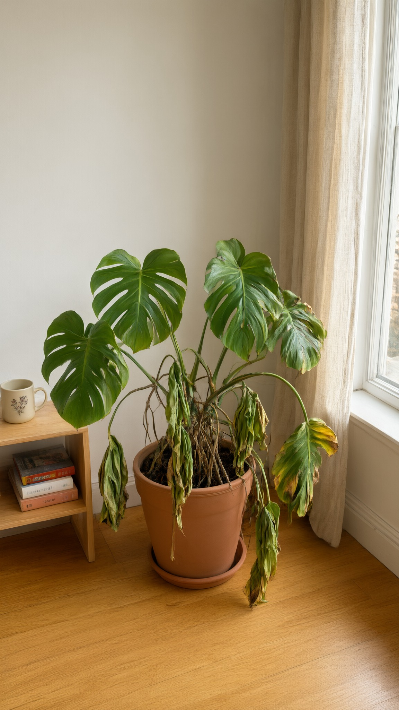
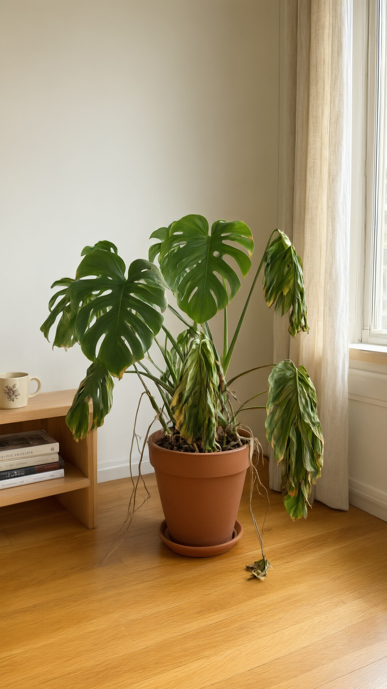
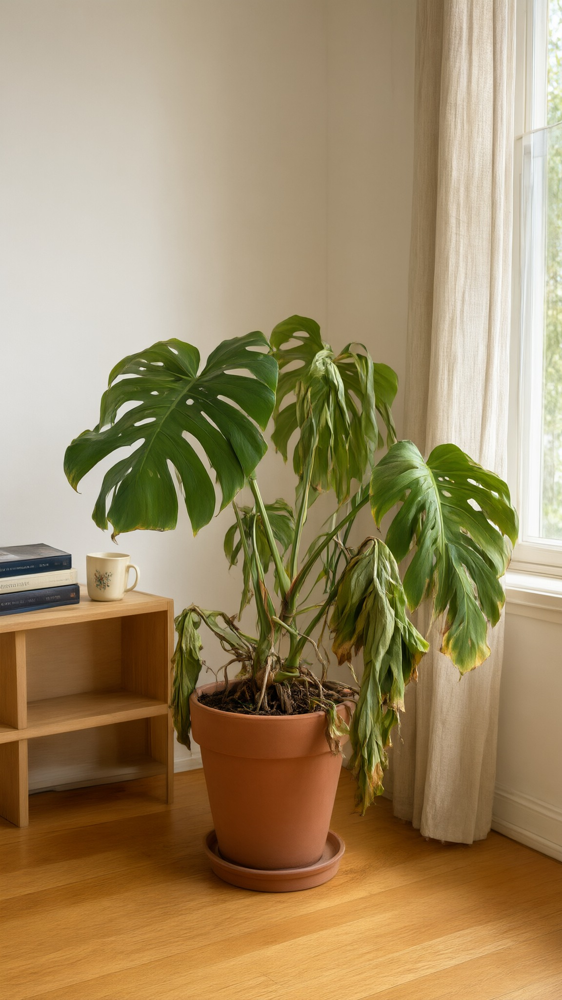
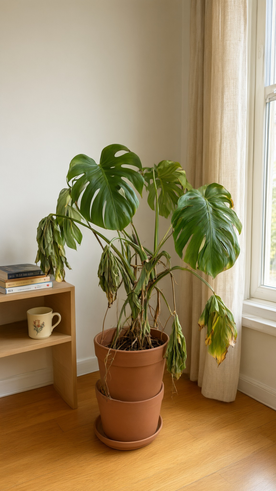
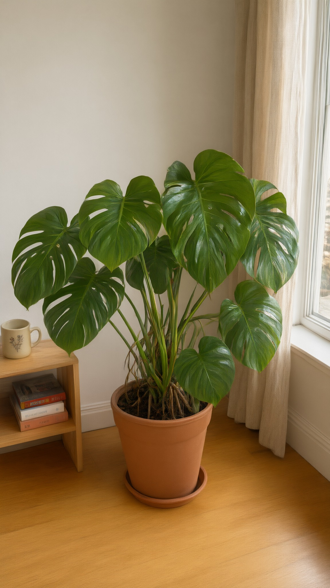
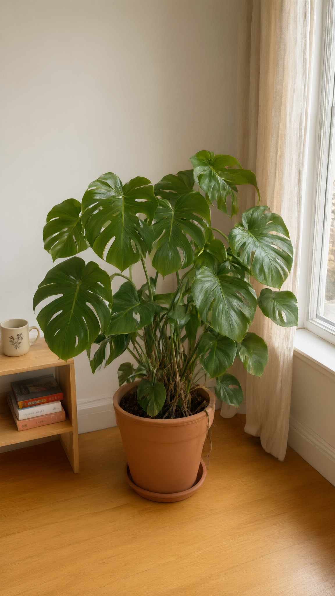
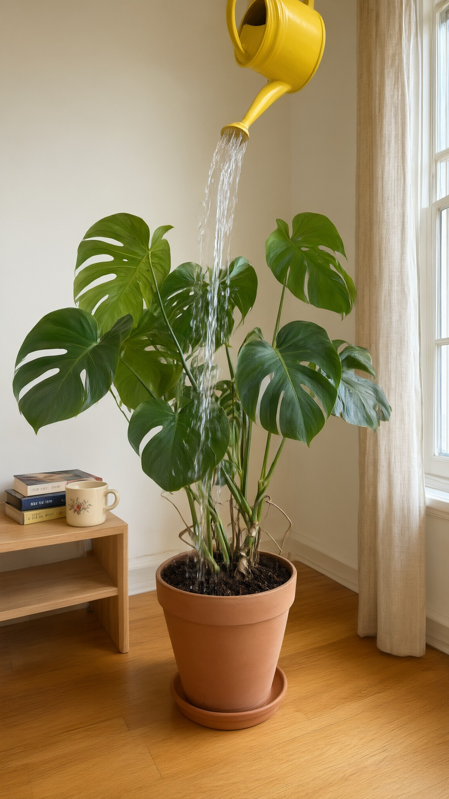
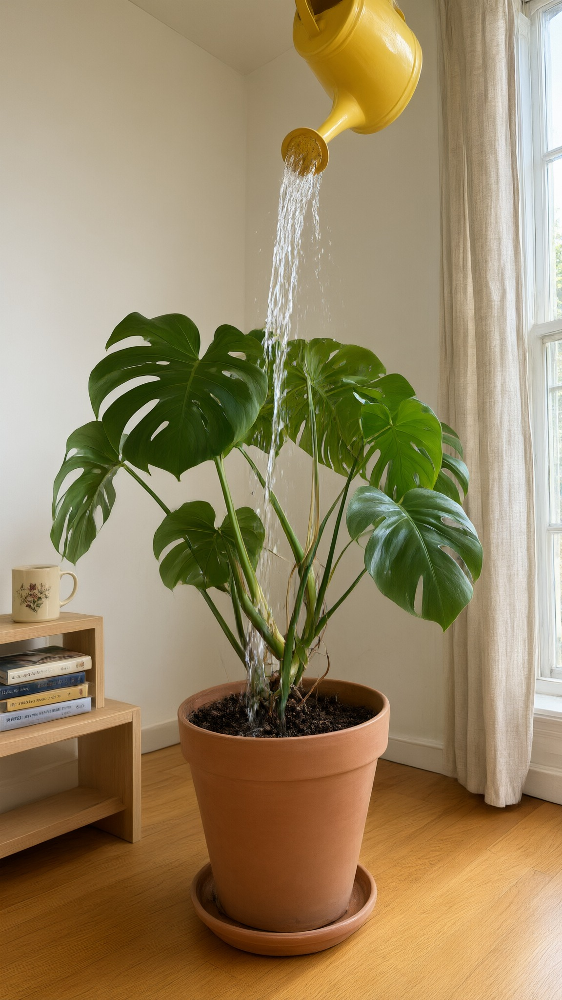

Fernly test, round 2 (lock v1.1)
Round score 66, usable, fix the listed issues. Best set: D1 + L1 + P2. Green border: the best set. Scores are advice; the art director picks.
D · S05 start: wilting monstera

D1 72 qwen
Clearly dying: stems hang over the rim, lower leaves yellow. Clean. Room reads a bit bare for phone footage
D2 66 qwen
Strong wilt, but a stem trails to the floor into a dried clump that will likely morph
D4 66 qwen
Centred and clean, but the upper leaves look healthy: reads 'a bit sad', not 'dying'
D3 FAIL qwen
Broken hero: two terracotta pots stackedL · S05 end: lush, edited from D1

L1 77 qwen-edit
Same plant grown lush and upright; room identical to D1. Dry stems show at the soil
L2 65 qwen-edit
Dense and healthy; one leaf crosses the curtain, brown roots at the baseP · S01: pour

P2 62 qwen
Same as P1, can closer to the corner, stream into the leaves; pot looks smaller than in D1
P1 62 qwen
The monstera now, same room. Eye level, not from the soil; thin stream reads 'watering', not 'drowning'